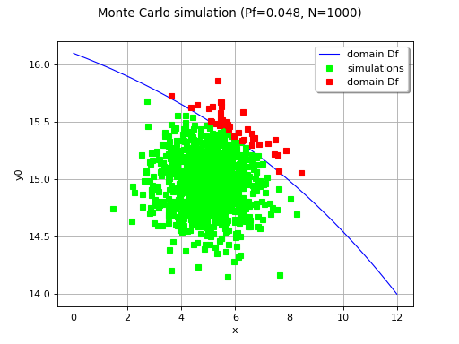

Monte Carlo simulation¶
Using the probability distribution the probability distribution of a random
vector  , we seek to evaluate the following probability:
, we seek to evaluate the following probability:
![P_f = \Prob{g\left( \vect{X},\vect{d} \right) \leq 0}]()
Here, is a random vector,  a deterministic
vector,
a deterministic
vector,  the function known as limit state function
which enables the definition of the event
the function known as limit state function
which enables the definition of the event ![\cD_f = \{\vect{X} \in \Rset^n \, / \, g(\vect{X},\vect{d}) \le 0\}]() .
.
If we have the set  of N
independent samples of the random vector ,
we can estimate
of N
independent samples of the random vector ,
we can estimate  as follows:
as follows:
![\widehat{P}_f = \frac{1}{N} \sum_{i=1}^N \mathbf{1}_{ \left\{ g(\vect{x}_i,\vect{d}) \leq 0 \right\} }]()
where  describes the indicator function equal to 1 if
describes the indicator function equal to 1 if  and equal to 0 otherwise; the idea here is in fact to estimate the required
probability by the proportion of cases, among the N samples of ,
for which the event
and equal to 0 otherwise; the idea here is in fact to estimate the required
probability by the proportion of cases, among the N samples of ,
for which the event  occurs.
occurs.
By the law of large numbers, we know that this estimation converges to the
required value  as the sample size N tends to infinity.
as the sample size N tends to infinity.
The Central Limit Theorem allows one to build an asymptotic confidence interval using the normal limit distribution as follows:
![\lim_{N\rightarrow\infty}\Prob{P_f\in[\widehat{P}_{f,\inf},\widehat{P}_{f,\sup}]} = \alpha]()
with
![\widehat{P}_{f,\inf} = \widehat{P}_f - q_{\alpha}\sqrt{\frac{\widehat{P}_f(1-\widehat{P}_f)}{N}},
\widehat{P}_{f,\sup} = \widehat{P}_f + q_{\alpha}\sqrt{\frac{\widehat{P}_f(1-\widehat{P}_f)}{N}}]()
and  is the
is the  -quantile of the standard normal distribution.
-quantile of the standard normal distribution.
One can also use a convergence indicator that is independent of the confidence level $alpha$: the coefficient of variation, which is the ratio between the asymptotic standard deviation of the estimate and its mean value. It is a relative measure of dispersion given by:
![\textrm{CV}_{\widehat{P}_f}=\sqrt{ \frac{1-\widehat{P}_f}{N \widehat{P}_f}}\simeq\frac{1}{\sqrt{N\widehat{P}_f}}\mbox{ for }\widehat{P}_f\ll 1]()
It must be emphasized that these results are asymptotic and as such needs that  .
The convergence to the standard normal distribution is dominated by the skewness
of
divided by the sample size N, it means
.
The convergence to the standard normal distribution is dominated by the skewness
of
divided by the sample size N, it means  .
In the usual case
.
In the usual case  , the distribution is highly skewed and this
term is approximately equal to
, the distribution is highly skewed and this
term is approximately equal to ![\frac{1}{N\sqrt{P_f}}\simeq\textrm{CV}_{\widehat{P}_f}/\sqrt{N}]() .
A rule of thumb is that if
.
A rule of thumb is that if  with
with  , the asymptotic nature of the Central Limit Theorem is not problematic.
, the asymptotic nature of the Central Limit Theorem is not problematic.
(Source code, png)
{kind=link}

The method is also referred to as Direct sampling, Crude Monte Carlo method, Classical Monte Carlo integration.